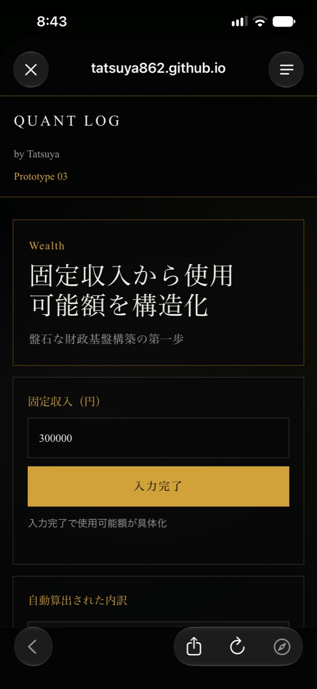
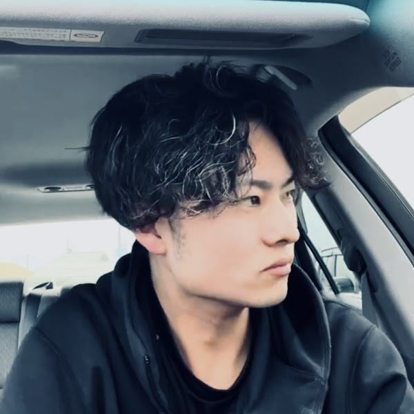

減らす発想で
人生の質を上げる



問い合わせ
必要事項を入力すると、メールアプリにお問い合わせ内容を引き継ぎます。

Profile
Quant Log 運営者
2018年より自己資金で為替取引スタート 2021年 証券外務員試験合格 2025年 口座残高ベースで、+170％以上の増加を実現 仮説／検証／改善スタイル確立 2026年 為替取引を引退
2026年より副業家向けコンテンツ配信サービス開始 AIを活用し、HP・Webアプリ制作、データ分析を行う 現在は為替取引で確立した仮説／検証／改善スタイルを法人・個人向けサービスに活用 「手間を減らし、人生の質を上げる」サービスを提供している 好きなことは美味しいものを心ゆくまで味わうこと